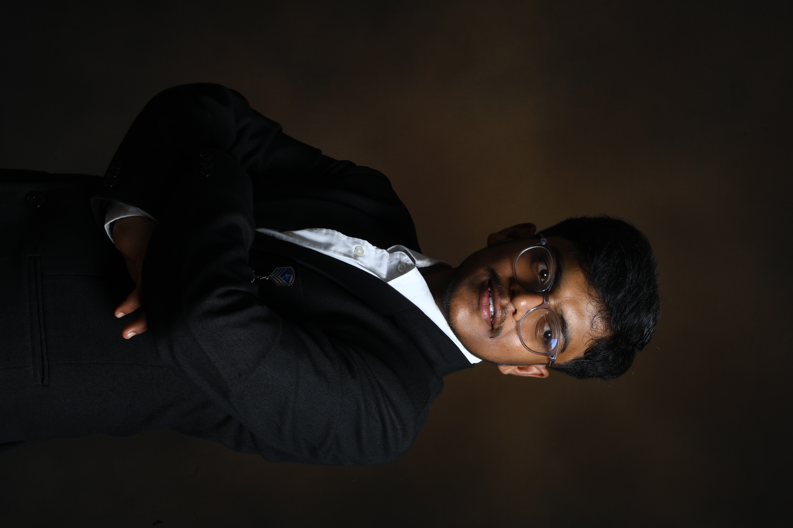

- Feel free to reach out to me via email or connect with me on social media.
- Email Id: herevinayp@gmail.com
- LinkedIn:Vinay_P
- Github:Vinay_P
- Phone: +91 7892903325
- Location: Jnana Bharathi Bangalore - 560056

I am a beginner frontend developer with a foundation in HTML and CSS, currently learning how to build clean and responsive websites. I focus on understanding the basics properly and improving my skills by working on practical projects. Along with frontend development, I am learning Java and Data Structures & Algorithms to strengthen my problem-solving ability and gain a deeper understanding of programming. I believe in learning step by step and building consistency through regular practice. I am currently working on projects like business websites and UI clones to improve my real-world development skills. My goal is to grow into a skilled developer and to gain hands on knowledge in Information Technology Field.
I am a BCA student at Don Bosco Institute of Management Studies and Computer Applications. I have learned the fundamentals of HTML and CSS and can build clean, structured web pages with proper layout and design. I enjoy working on simple web projects and continuously improving my understanding of how websites are built and organized. Currently, I am focusing on improving my skills in creating responsive websites so that my designs work smoothly across different devices such as mobiles, tablets, and desktops. I am also learning Java and Data Structures & Algorithms to strengthen my programming knowledge and problem-solving abilities. I am at the beginning of my development journey and aim to improve step by step by practicing regularly, building projects, and learning new concepts.